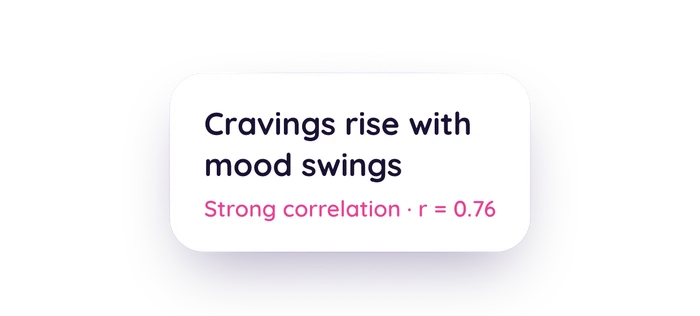

Your health history has patterns. Bring all of it and see them.
Upload years of labs, scans, and cycle history in minutes. Gaia connects it with your daily tracking and finds the patterns that only show up across months and years, not weeks.
Start Bringing In Your DataOn iPhone? Get the app to sync Apple Health too.
What you can bring
Lab reports
Drag and drop a PDF or a photo. Gaia pulls out every test name, value, unit, and reference range and adds them onto your timeline.
DEXA scans
Bone density, lean mass, and visceral fat, tracked over time so you can see the trend, not just the latest number.
Spreadsheets
Import a whole CSV of past results at once. We provide the template, so you just fill it in and upload.
Your old period tracker
Upload screenshots from whatever you used before, and Gaia reads your cycle history out of them.
Oura Ring
Connect it on the web, and your sleep and readiness data flow in automatically from there on.
Apple Health
Sync your full workout, sleep, and vitals history through the iOS app, and it joins everything else you've brought in.
What long history shows you
A few weeks of logging can tell you how you're doing right now. Months and years of history can tell you why. Here's what real cards from the app look like once there's enough data behind them:

Correlations pulled from your own logs, scored by strength.
Daily insights that read your history and your wearable data together.
Bring in years of history instead of weeks, and the same engine can go further. These are illustrative examples of the kind of finding long-horizon analysis surfaces, not results pulled from any one person's account:
"Your sleep quality and your cycle's luteal phase tended to move together."
Across 2 years, monthly view
"First noticeable improvement around day 12 of magnesium."
Treatment evidence, from your logged symptoms
"Cutting caffeine after 2pm, tested against 6 weeks of your sleep and mood logs."
Experiment verdict, 6-week test window
Beyond the 90-day window
Most health apps only look at your last few weeks. Gaia's long-horizon analysis runs in the background across your full history, on both a daily and a monthly view. It also holds itself to real statistical standards: it only shows you a pattern when the data actually supports it, and every finding carries a confidence level and a sample size, so you know how much to trust it.
Private by default
No ads, no data selling. Your health data is encrypted, and you can export or delete it anytime.
Frequently asked questions
Yes. You can bring your past lab work into Go Go Gaia and the app reads it for you. On iPhone, scan a printed or PDF lab report with your camera, or sync results from Apple Health Records. On the web app (app.go-go-gaia.com), drag and drop a report as a PDF or photo, or import a whole spreadsheet of past results from a CSV. Gaia pulls out each test name, value, unit, and reference range and adds them to your timeline, so panels like CBC, lipids, thyroid (TSH), and hormones (estrogen, progesterone, testosterone, AMH) sit alongside your cycle, symptoms, and wearable data.
As far as your records go. More history means stronger findings, since long-horizon patterns need months or years of data behind them before they're more than noise.
PDF, JPG, PNG, and HEIC for documents like lab reports, DEXA scans, and old screenshots. CSV for spreadsheets, with a template provided so your columns map to the right fields.
No. Labs, cycle history, and daily logs are enough for Gaia to start finding patterns. A wearable like Oura adds more data points, like sleep and readiness, but it isn't required.
Your patterns are already there. Go find them.
Upload your first lab report or import a CSV today. The rest builds as you keep logging.
Start Bringing In Your DataOn iPhone? Get the app to sync Apple Health too.